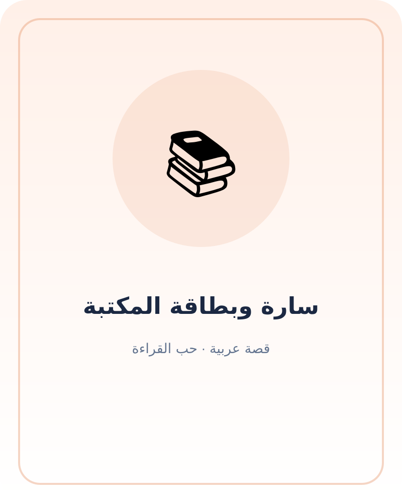

سارة وبطاقة المكتبة
قصة تشجع الطفل على اختيار كتاب يناسب اهتمامه، واستكشاف الصور، ومشاركة الحكاية مع الأسرة.
زيارة مختلفة
ذهبت سارة مع خالها إلى مكتبة الحي. رأت رفوفًا عالية وكتبًا كثيرة، فأعطاها خالها بطاقة صغيرة وقال: «اليوم اختاري قصة تثير فضولك».
ما الذي أحب؟
وقفت سارة عند كتب الحيوانات، ثم توقفت عند قصة عن البحر. سألت أمينة المكتبة: «هل هذه القصة فيها سمكة كبيرة؟». ساعدتها في العثور على كتاب مناسب، وجلستا تتصفحان الصور.
قراءة مشتركة
اختار خالها أن تقرأ سارة صفحة، ثم قرأ هو الصفحة التالية. عند صورة القارب، سألهما: «إلى أين تتوقعون أن يذهب؟». صنعت سارة نهاية جديدة للحكاية.
عودة الكتاب
في المنزل، وضعت سارة البطاقة داخل حقيبتها في مكان معروف، ثم قرأت القصة لأخيها. توقفا عندما ظهر حوت، وعدّا الأصداف المرسومة على الصفحة.
كتاب آخر
في الأسبوع التالي، أعادت سارة الكتاب واختارت قصة عن النباتات. قالت: «كل كتاب يفتح لي سؤالًا جديدًا». احتفظت ببطاقتها، وصارت زيارة المكتبة موعدًا تحبه.
أسئلة وأنشطة
- ما الكلمات الجديدة التي قرأتها؟
- ارسم شيئًا من الحكاية واكتب اسمه بمساعدة شخص كبير.
- اختر كلمة واستخدمها في جملة من عندك.